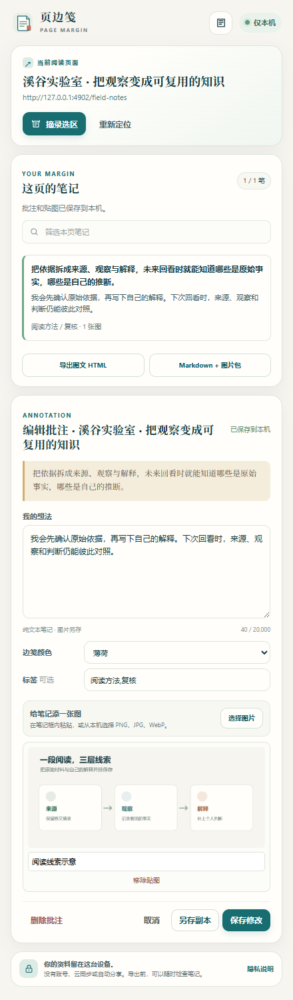
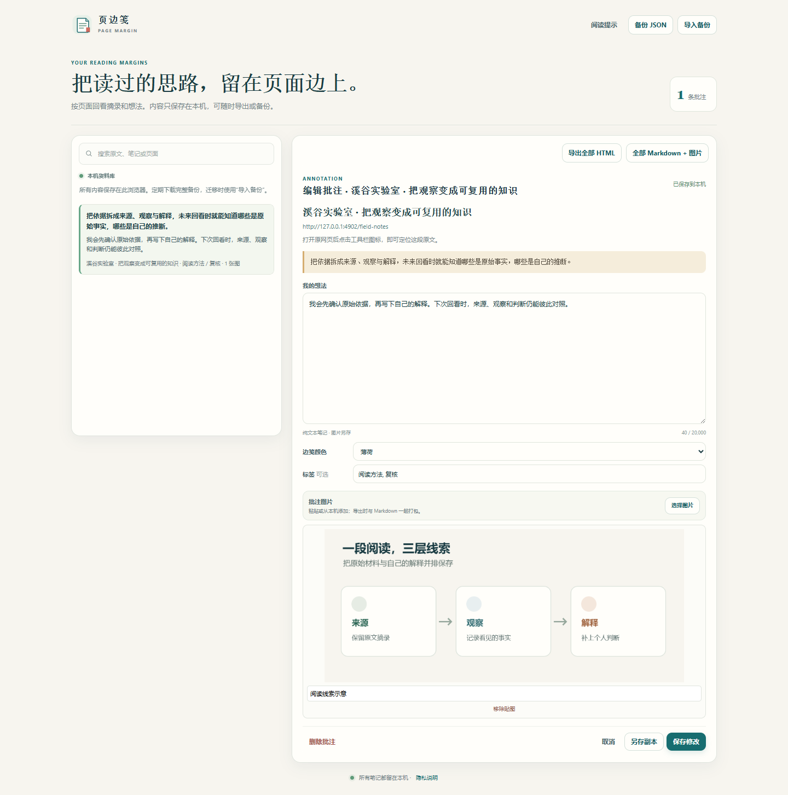

LOCAL TRIAL · INTERFACE PREVIEW
页边笺：把阅读变成可回访的笔记
页边笺是浏览器固定侧栏中的技术阅读批注试用版，可保存摘录、个人解释与本地图片，并导出笔记。下方是本机 Chrome 中的真实界面截图，使用虚构示例内容和自制示意图，没有客户数据。
本机试用 · 尚未上架 · 未开放购买

目前试用版的处理范围
默认本机处理。笔记和图片保存在浏览器本机扩展存储中；没有账户、同步或远程 AI 服务。此展示页只包含说明文字与界面截图，不提供扩展安装包，也没有购买或付款入口。
- 用户主动摘录时，扩展会临时遍历当前普通网页可见正文以定位所选内容（最多处理 2,000,000 个字符或 50,000 个文本节点）；长期保存的是所选摘录及最多 120 个字符的前后文，而不是整页正文。
- 支持纯文本笔记、标签、边栏颜色和每条笔记最多 3 张本地图片；支持单条图文 HTML、Markdown 加图片 ZIP 与 JSON 备份导出。
- 不支持 PDF、内嵌框架中的正文或跨设备同步。浏览器扩展存储不是加密保险箱；移除扩展或浏览器配置文件可能导致本机笔记无法继续访问，重要内容应定期导出备份。
这是需求研究后选定的工作流试验，不代表市场需求、购买意愿或销售结果已验证。当前没有商店上架、收费功能或商业许可交付。若将来公开发行，会先明确完整安装方式、权限、隐私和授权范围。